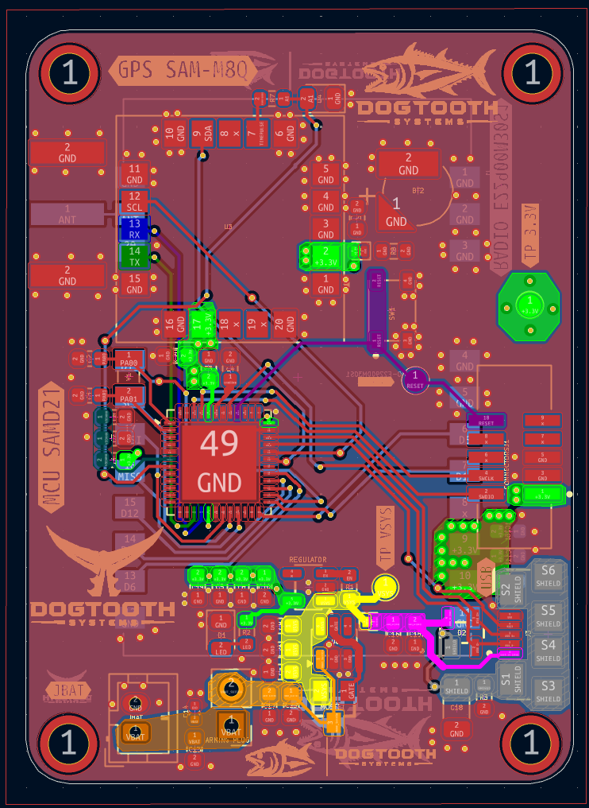
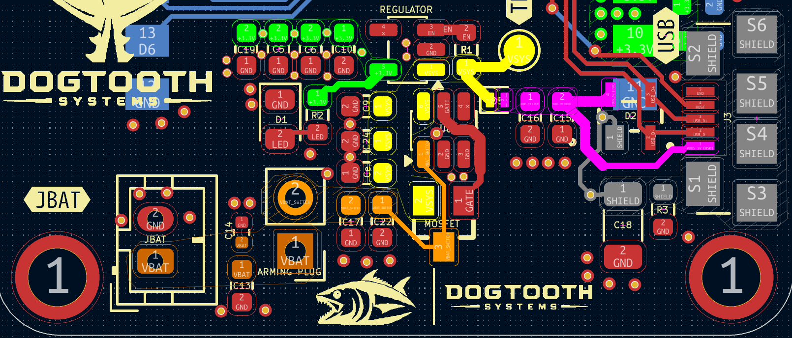
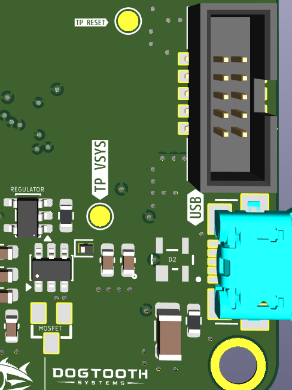

AEROSPACENU · SOLO PROJECT · 2026
A compact 4-layer flight computer integrating GPS telemetry and LoRa radio for AerospaceNU's high-power rocket program.
Arm Cortex-M0+ MCU, 48 MHz, 256 KB flash. Four SERCOM peripherals drive the GNSS, radio, SPI flash, and USB stack simultaneously.
Concurrent GPS/GLONASS, 10 Hz fix rate. SPI connection avoids I²C clock-stretching at high update rates.
900 MHz LoRa radio, 30 dBm output, SMA antenna connector. Handles all ground-station telemetry downlink during flight.
Amphenol 2×5 1.27 mm header. OpenOCD + J-Link Mini for flashing and stepping through bare-metal C.
11.2 mil trace on outer copper, calculated for JLC's 4-layer stackup. No 90° bends; all corners chamfered.
Unbroken GND pour on Layer 2. Reduces loop inductance on the power rail and serves as the RF return path for the 50 Ω trace.
600 mA LDO regulator. Supplies the 3.3 V rail to MCU, GNSS, flash, and IO — comfortably above worst-case radio TX burst.
Ideal diode controller + PMOSFET. USB takes priority with <50 mV drop; LiPo cuts in instantly when USB is removed.
Dual-rail TVS on USB D+/D−. 0.5 pF load capacitance, IEC 61000-4-2 Level 4 rated.
AerospaceNU designs and launches high-power rockets to altitudes above 10,000 feet. Off-the-shelf flight computers have fixed sensor configurations and closed firmware — no telemetry at our frequencies, no raw GNSS data, no integration path with the ground station we were building. We needed a custom board that could fly alongside the structural payload, downlink GPS position over LoRa, and survive the mechanical loads of a Mach 0.8 ascent.
Every design decision was made against a single hard constraint: the hardware has to work on the first drop. There is no field service. There is no rework at 10,000 feet.
The board is a 4-layer stackup: Signal / GND / PWR / Signal. The MCU is an ATSAMD21G18A (Arm Cortex-M0+, 48 MHz, 256 KB flash), chosen for its native USB Full-Speed peripheral, four independent SERCOM modules, and mature driver ecosystem. GNSS is a u-blox SAM-M8Q — concurrent GPS and GLONASS, up to 10 Hz fix rate — connected via SPI to eliminate I²C clock-stretching at high update rates. The LoRa radio is an Ebyte E22-900T30S, SX1262-based, 30 dBm output, with an SMA connector feeding a quarter-wave whip.
The unbroken ground pour on Layer 2 is the most important feature of the stackup. It ties all return currents to a common reference, reduces loop inductance on the power rail, and serves as the RF return plane for the 50 Ω antenna trace. Layer 3 carries a poured power plane split into 3.3 V and VBUS domains.

The 50 Ω transmission line from the E22 radio output pin to the SMA connector is the most layout-sensitive part of the board. Trace width was calculated using JLC's published 4-layer stackup parameters: 11.2 mil trace on the outer copper layer over a solid GND reference plane achieves 50 Ω within fabrication tolerances.
No 90° bends — every corner is chamfered at 45°. No stubs, no via transitions in the RF path. The SMA connector footprint has a via fence around the keeper tabs and a copper pour keepout under the signal pad. The RF zone is isolated from digital return currents with a moat cut in the outer copper pour. Antenna keepout extends three wavelengths from all metal enclosure walls.
Two supply sources: USB (5 V) and 1S LiPo (3.7 V nominal, 4.2 V charged). The LTC4412 ideal diode controller manages source priority — when USB is present it gates the LiPo PMOSFET with a sub-50 mV forward drop; when USB is removed the LiPo takes over with zero switching glitch. No Schottky D-OR diodes, no voltage droop on handoff.
The AP2112K-3.3 LDO runs off whichever source wins, regulating to 3.3 V at up to 600 mA. Worst-case draw: SAM-M8Q at 18 mA, E22 radio at 200 mA TX burst, SAMD21 at 25 mA, peripheral IO at 30 mA — 273 mA peak, 54% of LDO rating with 200 mA headroom. ESD protection on USB D+/D− is a PRTR5V0U2X: 0.5 pF input capacitance to preserve high-speed USB signal integrity, rated IEC 61000-4-2 Level 4.

Power section — top copper routing

3D power rail close-up — LDO & USB